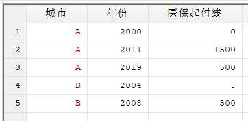
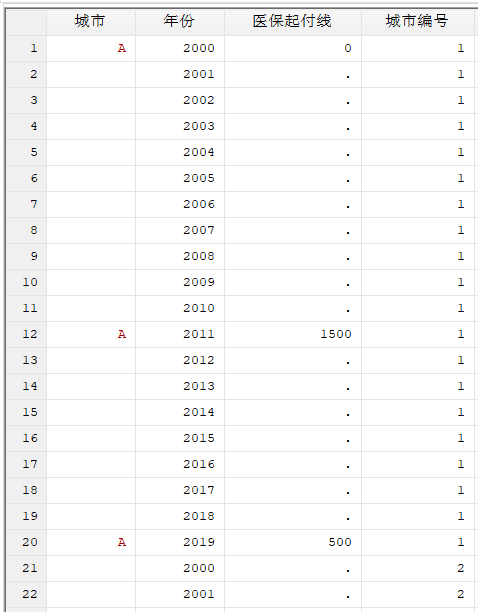
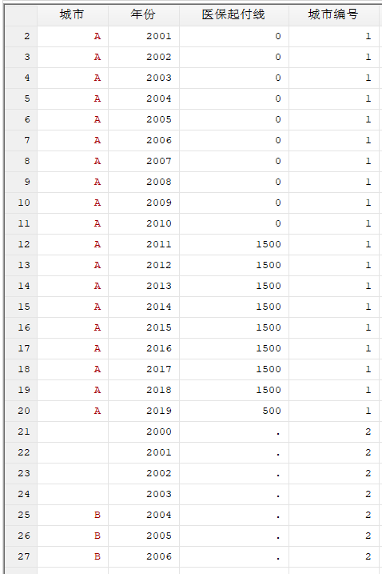
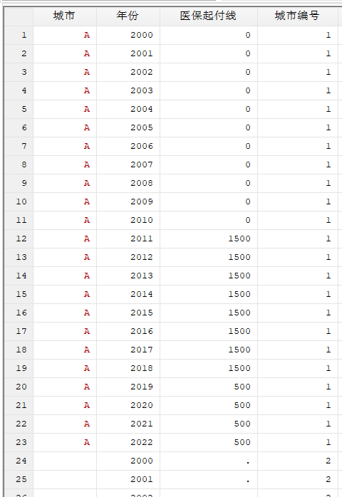
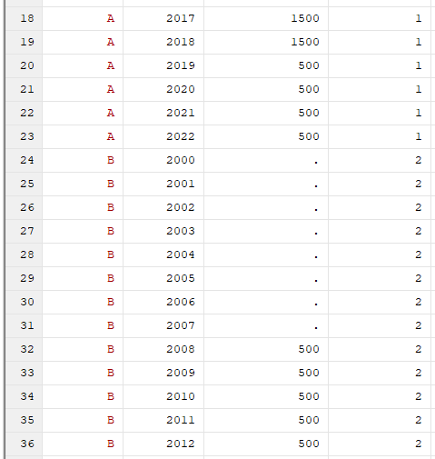

在分析政策数据时，我们可以整理出政策开始施行的年份的数据。通过tsfill和carryforward等命令，可以在stata中将这样的数据扩展为完整的面板数据。
例如，我们有这样的数据：

我们希望将其中空缺年份的数据都填补上。例如，在2001-2010年，A城市的医保起付线都应当是0元。
为此，先将数据声明为面板数据，然后使用tsfill命令填充。
使用tsfill命令时，如果添加full选项，则会按照整个面板数据集的时间范围填补每个样本（例如在上述示例中，A城市和B城市都会填补2000-2019年的数据）；如果不添加该选项，则只会按照每个样本自己的时间范围填补（A城市填补2000-2019年的数据，B城市只填补2004-2008年的数据）。
egen 城市编号 = group(城市)
tsset 城市编号 年份
tsfill, full
可以看到，虽然空缺的年份和城市编号填补上了，但在这些年份，其他变量的值还是缺失值：

这时可以使用carryforward命令。它的功能就是把变量值复制到下一行。初次使用需要用ssc install carryforward, replace命令安装。
使用carryforward时，必须用sort命令确保样本按顺序排列，并使用by命令分组，否则上一个城市最后一年的变量值会填充到下一个城市的前几年里：
sort 城市编号 年份
by 城市编号: carryforward 城市 医保起付线, replace
运行结果：

进一步地，如果我们需要突破数据库原有的时间范围，例如将数据延长到2022年，则可以通过构造一个辅助样本来实现。
首先在首行插入一个新样本，然后将首行的年份值改为2022：
insobs 1, before(1)
replace 年份 = 2022 in 1
重新填充一遍数据：
tsfill, full
by 城市编号: carryforward 城市 医保起付线, replace
此时我们可以看到，数据的时间范围已经延长到了2022年：

最后，删除辅助样本：
drop if 城市编号 == .
如果要把B城市前几年缺少的城市名也填充上，可以使用gsort命令将样本按年份倒序排列后填充。注意填充操作时不要涉及城市名以外的变量。最后再把样本顺序调整回原样。
gsort 城市编号 -年份
carryforward 城市, replace
sort 城市编号 年份
可以看到，数据已经完整填充：
